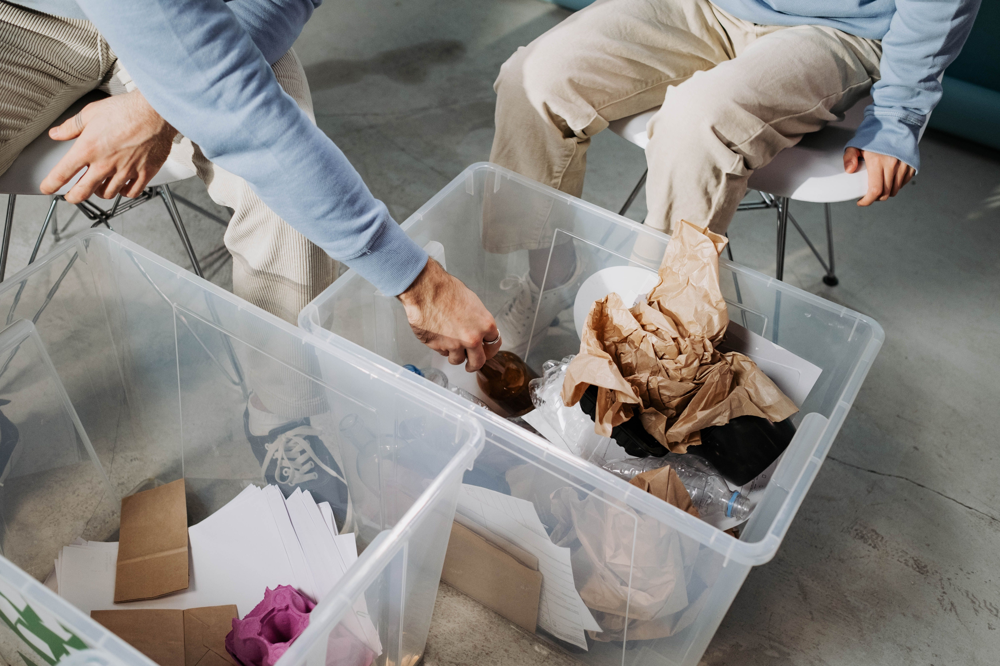
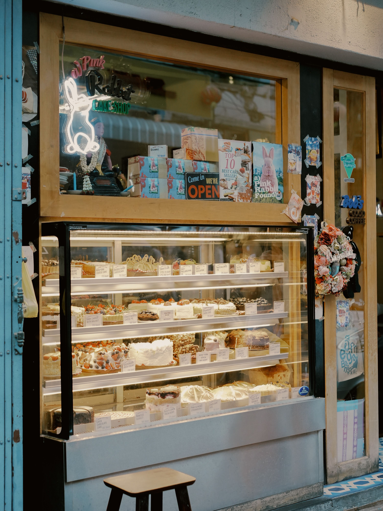

Our Services & Projects
Oasis Association provides a range of programmes designed to support people with intellectual disabilities.
These programmes include developmental support, work opportunities, supported living, adult activity programmes and income-generating projects.
Workshops
Oasis workshops provide supportive environments where adults with intellectual disabilities can participate in meaningful work and develop their abilities.
The workshops also provide opportunities for beneficiaries who may experience barriers to employment in the open labour market.
Day Centres
Oasis Day Centres provide specialised care and developmental programmes for children with intellectual and developmental disabilities.
Programmes can include developmental activities, stimulation, social interaction, meals, transport and other forms of support.
Group Homes
Oasis operates group homes that provide supported living environments for adults with intellectual disabilities.
Residents can participate in household activities, hobbies, social activities and outings while receiving appropriate support.
Adult Groups
Adult Groups provide meaningful occupation, social interaction, life-skills development and care for adults who require a higher level of supervision.
Recycling
Oasis recycling provides an opportunity to support both people and the environment.
Recyclable materials such as paper, cardboard, glass and aluminium can be collected and processed through the recycling project.

Charity Shops
Oasis charity shops sell quality pre-loved items while raising funds to support the organisation's work.
Members of the public can support Oasis by donating suitable second-hand clothing, books, furniture, household goods, toys and other items.

Bakery
The Oasis bakery is one of the organisation's income-generating activities.
Projects such as the bakery contribute towards the sustainability of Oasis and help create meaningful opportunities.
Outsourced Business Services
Oasis also provides outsourced services to businesses. Activities can include sorting, cleaning, packaging, labelling, tagging and other production-related tasks.
These partnerships provide businesses with useful services while creating meaningful work opportunities for beneficiaries.
Support Our Work
Would you like to support an Oasis programme or find out how your business can work with us?
Make an Enquiry